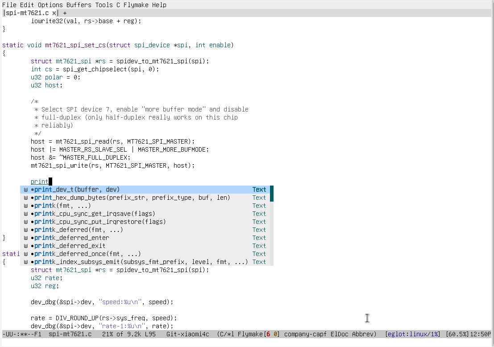
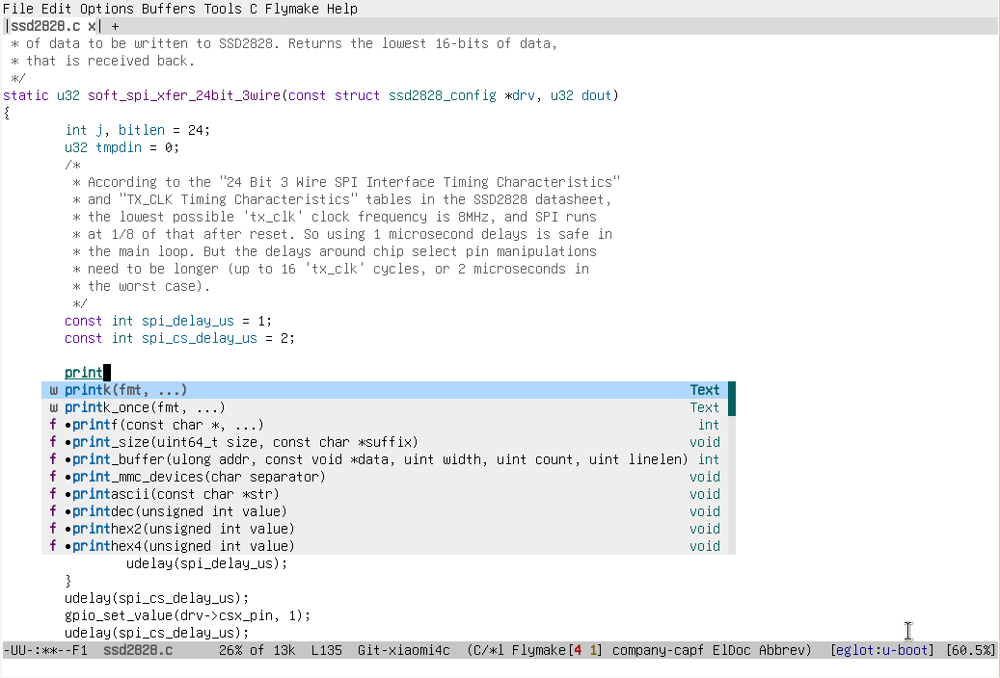
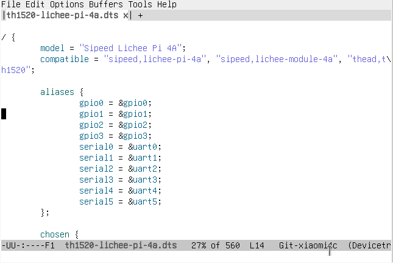

使用GNU EMACS开发Linux内核和uboot
配置GNU EMACS
package-install eglot RETpackage-install company RETpackage-install dts-mode RET
在GNU EMACS配置文件加入:
(add-hook 'c-mode-hook 'eglot-ensure) ;; 在C模式自动启用eglot(add-hook 'c-mode-hook 'company-mode) ;; 在C模式自动启用company
编写 .clangd
由于内核开发一般是交叉编译，所以需要要让clangd忽略架构相关的编译器参数:
需要在linux/uboot的源码目录添加 .clangd 文件:
CompileFlags:Add: -Wno-unknown-warning-optionRemove: [-m*, -f*]
生成 compile_commands.json
使用clangd补全代码需要 compile_comamnds.json 文件
linux内核
export ARCH=archexport CROSS_COMPILE=arch-vendor-elf-make xxx_defconfigmake compile_commands.json
uboot
export ARCH=archexport CROSS_COMPILE=arch-vendor-elf-make xxx_defconfigmake -j`nproc`./scripts/gen_compile_commands.py
使用GNU EMACS编写linux/uboot 中的C代码
emacs drivers/xxx/xxx.c


使用GNU EMACS编写设备树
emacs arch/xxx/boot/dts/xxx.dts
dts-mode提供了高亮和缩进支持:
